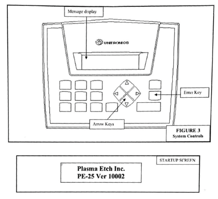

Plasma Etcher
Review the principles of plasma etching.
History
- initial: 11/02/2022
- update: xx
Warnings
If you are using O_2_, make sure the oil in the pump is compatible with O_2_ in order to avoid fires.
Only trained users can operate the plasma etcher.
Carefully read the entire manual before operation.
Make sure user is trained for Gas Cylinder safety.
Sign your name in the log book / GWiki
Confirm/switch the tubing to connect to the correct gas (Ar or O_2_).
Run a warm up cycle to allow the vacuum pump and components to stabilize before processing material.
General
Follow the procedure except for step 6 to run the warm up cycle.
- If you switched the gas, run the warm up cycle with minimum RF power 3-5 times.
- The primary gases used are Argon and Oxygen.
- Always make sure the vacuum pump tube is safely connected to the wall vent before using the machine.
- Be careful when pressing ENTER. Make sure the correct command is selected before pressing it.
| Setup Menu with Default Values | Parameter Range |
|---|---|
| Plasma Time | 3 mins 0 to 59.9 mins |
| Vacuum Set Point | 49.9 mtorr 1.0 to 1000.0 mtorr |
| Atmospheric Vent | 2 mins 0 to 59.59 mins |
| Purge Vent | 0 to 59 s |
| Gas Stabilize: 59 secs | 0 to 59 s |
| Vacuum Alarm: 15 mins | 0 to 59.59 mins |
Procedure
Slowly open gas cylinder valves. Make sure the vacuum pump exhaust tube is securely connected to the wall vent.
- Power Level knob should be off (counter clockwise).
- The gas flow meter should be off (ball at the bottom).
- The door is closed & locked.
Tum the machine on.
- Tum the vacuum pump on.
- Tum the POWER ON in the back(up position).
Press ENTER to access the Commands menu.
Press ENTER to select the PLASMA option.
Load the material and close the chamber door. .
Press ENTER to start the cycle. The following process will start:
- It will pump down to the Vacuum Set Point (~2-3 mins)
- The Gas Stabilize process will start. Turn the gas flow meter knob counter clockwise and make sure the gas is flowing. Take note of the gas flow meter reading.
- Plasma Cycle will start. Tum on the Power Level within 3 seconds. Make sure to observe the purple glow of the plasma. Take note of the Power Level. Observe and record the gas pressure by pressing the left arrow button while the plasma cycle is occurring.
- The system will vent for the time set in Purge Vent. This will clear the chamber of the gas. Turn off the Power within 3 secs. The plasma glow should be gone at this point. After the Purge Vent is finished, it will do a Purge Pump down to the Vacuum Set Point to clear the chamber of the gas and pressure. After the Purge Pump down, the Plasma Cycle will be complete.
After the cycle is completed, go to the Commands menu by pressing the up arrow key, pressing the ENTER button once, and pressing the right arrow button to select CYCLE-OFF.
- It will do the Atmospheric Vent process for 2 mins.
Carefully and safely remove the material. Close and lock the door.
Shut the machine down and close the gas cylinder valves.
- Tum the POWER OFF in the back.
- Turn the vacuum pump off.
- Close the gas cylinder main valve.
- Shut the secondary valve in the gas cylinder.
Command Menu
- PLASMA
- CYCLE-OFF
- CYCLE-END
